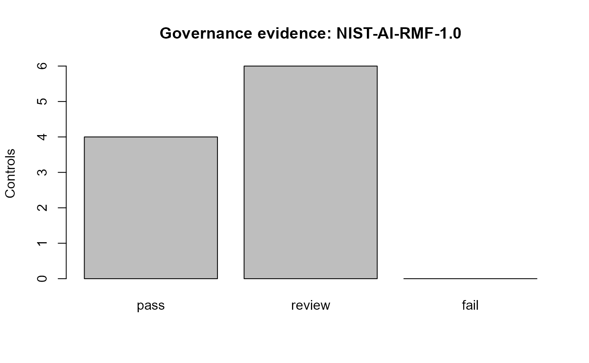

Governance Evidence and Standards Crosswalks
Source:vignettes/governance-standards-profile.Rmd
governance-standards-profile.Rmdgp3ml can organize package evidence into a native governance profile or an orientation crosswalk for NIST AI RMF 1.0, ISO/IEC 23894, or ISO/IEC 42001.
These are documentation crosswalks only. They are not evidence of NIST endorsement, ISO conformity, certification, or legal compliance.
profile <- create_gp3ml_governance_profile(
evidence = list(
task = structure(list(), class = "gp3ml_task"),
feature_manifest = structure(list(), class = "gazepoint_feature_manifest")
),
framework = "NIST-AI-RMF-1.0"
)
audit <- audit_gp3ml_governance_profile(profile)
audit$status
#> [1] "review"
plot(audit)
The profile is intentionally evidence-oriented: missing evidence is surfaced for review rather than converted into a synthetic compliance score.